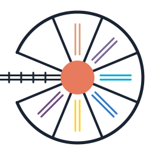

Roundhouse
Rails is the specification; deployment is a build flag.
Roundhouse ingests a Ruby on Rails application into a typed intermediate representation and emits equivalent projects in Crystal, Elixir, Go, Python, Rust, and TypeScript. The current fixture is a Rails-guides "real blog" derivative.
Successor to railcar. Dual-licensed MIT / Apache-2.0.